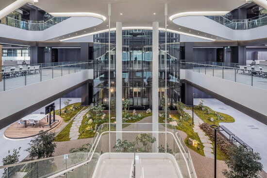
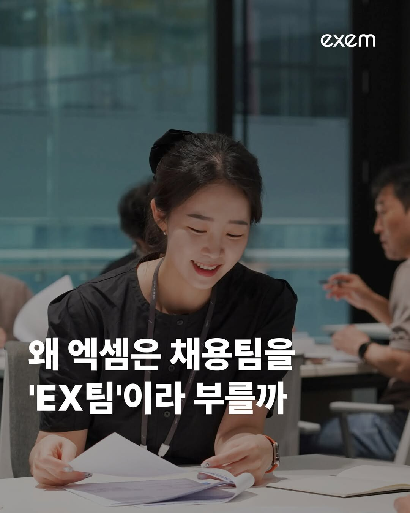

조종암 회장은 엑셈에 이어 자회사 신시웨이까지, 두 개의 SW 코스닥 상장사를 이끌고 있다. 그의 인사 철학은 '어떻게 하면 팀장을 정예화할 것인가?' 한 문장으로 요약할 수 있다. 팀장을 스타트업 대표처럼 세우고, 조직 전체를 '일에 매진하는 상태'로 유지하는 그의 HR 원칙을 들어보았다.
조직 관리는 팀장이 핵심이다
안녕하세요, 엑셈과 자회사 신시웨이, 이렇게 2개 상장사를 이끌고 있는 조종암입니다. HR에서 특히 팀장의 중요성과 역할에 관해 이야기하도록 하겠습니다.
저는 인사에서 '팀장'이 정말 중요하다 생각합니다. 회사가 커지면 사장을 비롯한 경영진이 개입하는 데 한계가 있기 때문입니다. 그래서 저는 조직 관리에서는 '오로지 팀장'을 내세웁니다. 우리 회사의 인사 철학은 '어떻게 하면 팀장을 정예화시킬 것인가?'가 핵심이에요.

일일이 직원들 하나하나 면담하는 게 아니라, 팀장을 정예화 시키는 게 조직 관리의 핵심입니다. 팀장이 직원들을 유능하게 만드는 일이 가장 중요합니다. 반대로 팀장이 요령 부리면 팀 전체가 무너져요.
인사 교육도 '팀장 훈련'에 초점을 맞춥니다. 그냥 팀장들 불러다 놓고 강의 듣는 게 아니라 경험을 공유하는 '팀장 경연대회' 같은 면이 있습니다. A팀장이 "우리 팀은 이런 문제가 있어요"라고 하면, B팀장이 "저도 비슷한 문제가 있는데 이렇게 해결 중이에요." 이런 식이죠.
팀장은 스타트업 대표의 마인드로, 직원을 일에 매진하게 만들어야 한다
저는 가끔 팀장들에게 이렇게 긴장감을 줍니다.
당신이 팀원을 이끌고 있는 스타트업 사장이라고 생각해 봐라. 그 자금은 팀장의 퇴직금, 그리고 아버지와 장인어른에게 빌린 돈으로 월급 나간다고 생각해라. 그러면 보다 냉정하게 바라볼 수 있다.
팀장은 팀원의 위치를 냉정하게, 어느 만큼 회사에 기여하고 있는지 보여줘야 합니다. 아니면 다 저항하는 분위기가 만들어져요. 어느 회사든 한 3년 다니면 익숙해져요. 일 못하는 사람은 '수용적'이지 않아요. 자기가 익숙한 것만 해요. 팀이 이 분위기에 젖으면, 뭔가 새로운 걸 하라고 할 때 분위기가 싸해집니다.
이처럼 팀장은 어느 정도 '일적인 긴장 상태'를 계속적으로 가져가게, 팀원을 일에 매진하게 만들어야 합니다. 물론 워라밸은 중요하지만, 젊은 직원일수록 일에 매진하게 해야 합니다. 그래야 팀원의 커리어가 활짝 열립니다. 젊을 때 배우고 두각을 드러내야 더 큰 회사, 대기업과 글로벌 기업에 갈 수 있으니까요.

팀장 역할은 매우 세심하게 다뤄야 한다
체질적으로 팀장에 맞지 않는 사람도 있습니다. '능력'의 문제가 아니라 '관리자라는 역할'의 문제일 때죠. 하지만 팀장에서 내리는 건 조심히 결정하고, 또 신중하게 연착륙하도록 배려해야 합니다.
그래서 우리 회사는 두 팀을 합치거나 팀을 더 쪼개거나 이런 방법을 종종 사용합니다. 회사가 명분을 만들어주는 거죠. 팀장이 매니저 자리에서 내려오는 게 어느 정도 자연스러운 문화로 자리잡다 보면 문제가 덜해요. 또 팀장이 더 큰 그룹을 맡을 수 있는지 역량 체크를 위해, 팀장이 그룹장을 겸하는 경우도 있습니다.
그리고 나이보다는 일을 임하는 태도가 훨씬 중요합니다. 회사에서 임원이 되려 하든, 나가서 사업을 하려 하든 일을 대하는 태도가 남다른 분들이 있습니다. 이런 분들은 좀 더 일찍 팀장을 달아줘도 괜찮습니다. 이런 한 사람 한 사람이 회사에 큰 영향을 끼치니까요.
회사는 직원들이 일에 매진할 수 있도록 해야 한다
제가 회의에 들어가서 주로 보는 것은 조직원들이 '매진 상태에 있느냐'입니다. 회사가 하나의 목표를 향해 가면 좋겠지만, 때로는 여러 목표를 동시에 좇아야 하고, 또 불명확할 때도 있어요.
그럼에도 직원들이 '매진 상태에 있는가'보다 중요한 건 없습니다. 조직 분위기가 뭔가 냉소가 돌고 그런 건 생각보다 심각한 문제예요. 이런 문제는 최대한 빠른 시일 내에 정리해야 합니다.
현장에 있는 분들은 그 의견에 반대할 때가 많아요. 그들은 또 현장에서 당장의 실무를 신경 써야 하니까요. 그런데 저는 절대 반대합니다. 그렇게 시간이 흐를수록 조직 자체가 망가집니다. 일정한 시간이 지나면 서로 인간적으로 엮인 사이인데, 누구 서운하게 하기 힘들거든요.
회사는 조직원들이 일에 매진하지 못하는 상태를 빨리 마무리 짓고, 조직원들을 다시 '매진' 상태로 만들어줘야 합니다. 그럴 때 회사가 나서서 문제가 되는 부분을 잘 찾아내서 제거해줘야 해요. 기업은 직원들이 일을 통해 성장하기 위해 모인 곳입니다. 직원들의 폭발적인 성장의 분위기를 만들어주는 것이 경영진이자 선배로서의 의무라 생각합니다.